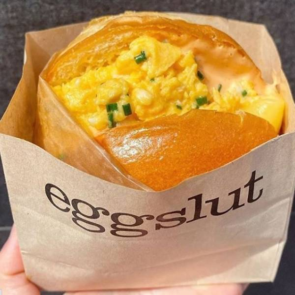

The Eggslut Fairfax Sandwich
안녕하세요.
계란은 스크램블이 국룰입니다.

위 사진은 에그슬럿의 시그니처 메뉴, 페어팩스 샌드위치입니다.
페어팩스 샌드위치 하나의 가격은 7800원이다.
출처
개비싸다. 계란밖에 안들은 샌드위친데 소고기가 든 와퍼보다
비싸다니...(그래도 맛있다.)
그러니 직접 만들어봅시다.(2개 기준 / two servings)
- 계란 3개 / Three Eggs
- 버터 한조각 / A Small Slab Of Butter
- 스리라챠 소스 / Sriracha Sauce
- 마요네즈 / Mayonnaise
- 버거 번 2개 / Two Burger Bun
- 슬라이스 치즈 2장 / Two Slices Of Cheese
- 파슬리 조금 / Dash Of Parsley
- 소금 조금 / Dash Of Salt
- optional: 카라멜 양파 / Caramelized Onion
- 번을 반으로 자른 다음 아래 번과 치즈를 을 노릇하게 구워줍시다.
-
왁에다 계란을 풀어주고, 버터와 파슬리,소금을 넣은 뒤, 중불에 올려줍시다.
저희 집 기준 인덕션으로는 6에서 7정도가 적당하더군요.
- 스패츌라로 왁을 멈추지 말고 저어주세요.
- 왁에 잔열이 있으니 어느정도 스크램블이 완성되면 불을 끕니다.
-
위쪽 번 위에 스리라챠 소스와 마요네즈를 2:5 비율, 느끼한 것을
싫어하신다면 3:5 비율로 섞어준 다음 펴 바릅니다.
-
번당 스크램블을 절반씩 올려준 다음
(optional: 카라멜 어니언을 토핑해준 후) 위 번을 덮어줍니다.